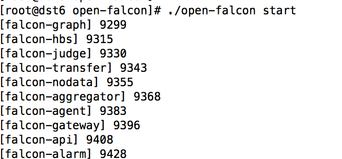
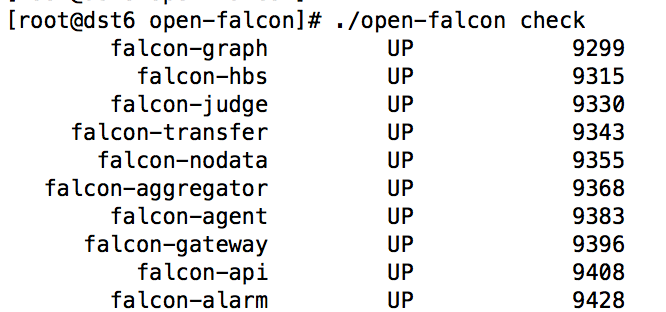
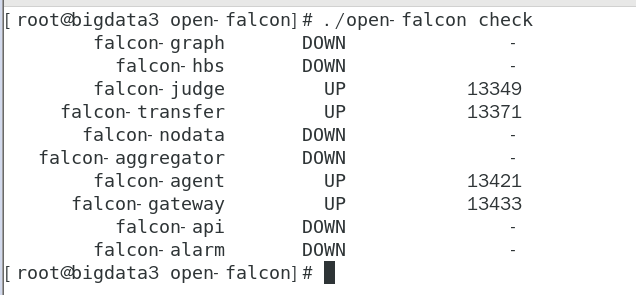

14.2、单机&分布式安装
说明：单机安装是分布式安装基础，分布式安装是为了减轻服务器压力。
agent:自发现，采集机器负载监控指标，与transfer建立长连接
transfer:数据转发服务，接收agent数据，传给graph和judage组件
graph：存储绘图数据，接收transfer，处理api查询，返回绘图数据
api：提供统一操作接口
hbs：心跳服务器，agent都会连接到hbs，更新host表，获取报警策略缓存在内存里，judage会请求。减少对DB压力。
judge:告警判断，transfer会将数据给judge判断是否告警【使用了redis，端口有变，请修改自己配制的redis，ip:端口，默认端口6379】
alarm：处理报警，从redis读取处理，包含发邮件，信息。
nodata：监测数据异常上报，和judge协同工作
aggregator：集群聚合，聚合集群下所有机器某个值，提供集群视角监控
gateway：和网络分区有关
1、单机安装【分布式安装基础准备】
一、 创建工作目录
export FALCON_HOME=/home/work
export WORKSPACE=$FALCON_HOME/open-falcon
mkdir -p $WORKSPACE
二、 解压二进制包
https://github.com/open-falcon/falcon-plus/releases
cd /data/program/software
`tar -xzvf open-falcon-v0.`2.1`.tar.gz -C `$WORKSPACE
三、 配置数据库账号和密码
cd $WORKSPACE
grep -Ilr 3306 ./ | xargs -n1 -- sed -i 's/root:/root:bigdata/g'
包含关键字 s单行匹配 /g全局所有
注意root:后面默认密码为空，所以只是看到了root:
grep -Ilr 3306 ./ | xargs -n1 -- sed -i 's/root:/root:Admin123*/g'
修改数据库地址
grep -Ilr 3306 ./ | xargs -n1 -- sed -i 's/127.0.0.1/192.168.222.130/g'
四、 启动
查看目录下包括Open-Falcon的所有组件，先默认全部启动，之后一个一个进行分布式部署以及启动
cd $WORKSPACE
./open-falcon start

# 检查所有模块的启动状况
./open-falcon check

凡是DOWN开启失败的，自行查看该模块下日志排查问题。
对于bigdata1,bigdata2自启动agent
vi /etc/rc.local
cd /home/work/open-falcon/ && sleep 10 && ./open-falcon start agent
保存,
chmod 775 /etc/rc.local #每次修改rc.local后必须加该权限
对于bigdata3自启动open-falcon
vi /etc/rc.local
/home/work/open-falcon/dashboard/control
start
但是只自启动如下服务：

启动了judge,transfer,agent,gateway
没启动：alarm,api,aggregator,nodata,hbs,graph
在rc.local增加以下内容：
cd /home/work/open-falcon/ && sleep 10 && ./open-falcon start alarm
cd /home/work/open-falcon/ && sleep 10 && ./open-falcon start api
cd /home/work/open-falcon/ && sleep 10 && ./open-falcon start aggregator
cd /home/work/open-falcon/ && sleep 10 && ./open-falcon start nodata
cd /home/work/open-falcon/ && sleep 10 && ./open-falcon start hbs
cd /home/work/open-falcon/ && sleep 10 && ./open-falcon start graph